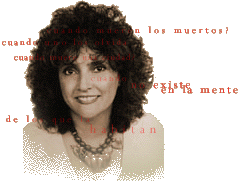

Book Discussion Series: 2010-2012
2011-12 Schedule of Events
| Title | Author | Discussion Leaders | Date and Time | Location |
|---|---|---|---|---|
|
Book Excerpts:
|
Andre Dubus III | Afa Mohajer | Thursday, |
The Gallery, Georgiadis Hall* |
|
Book Excerpts: First Pages |
Laura Esquivel |
Jacqueline Gottstein |
|
The Gallery, Georgiadis Hall* |
The Immortal Life of Henrietta Lacks Book Excerpts:
|
Rebecca Skloot | TBA | Thursday, March 29, 2012, 7:00-8:30pm |
The Gallery, Georgiadis Hall* |
About the Authors and the Books
House of Sand and Fog by Andre Dubus III
 About the Author
About the Author
"Andre Dubus III grew up in mill towns on the Merrimack River along the Massachusetts-New Hampshire border. He began writing fiction at age 22 just a few months after graduating from the University of Texas at Austin with a Bachelors Degree in Sociology. Because he prefers to write in the morning, going from "the dream world to the dream world", as the Irish writer Edna O'Brien puts it, he took mainly night jobs: bartender, office cleaner, halfway house counselor, and for six months worked as an assistant to a private investigator/bounty hunter. Over the years he's also worked as a self-employed carpenter and college writing teacher.
Andre Dubus III is the author of a collection of short fiction, The Cage Keeper and Other Stories, and the novels Bluesman, House of Sand and Fog and The Garden of Last Days, a New York Times bestseller. His memoir, Townie, is forthcoming in February 2011 with W.W. Norton & Co. His work has been included in The Best American Essays of 1994, The Best Spiritual Writing of 1999, and The Best of Hope Magazine. He has been awarded a Guggenheim Fellowship, The National Magazine Award for fiction, The Pushcart Prize, and was a Finalist for the Rome Prize Fellowship from the Academy of Arts and Letters. " - from http://andredubus.com/bio.html.
About the Book
"Andre Dubus III wastes no time in capturing the dark side of the immigrant experience in America at the end of the 20th century. House of Sand and Fog opens with a highway crew composed of several nationalities picking up litter on a hot California summer day. Massoud A mir Behrani, a former colonel in the Iranian military under the Shah, reflects on his job-search efforts since arriving in the U.S. four years before: "I have spent hundreds of dollars copying my credentials; I have worn my French suits and my Italian shoes to hand-deliver my qualifications; I have waited and then called back after the correct waiting time; but there is nothing." The father of two, Behrani has spent most of the money he brought with him from Iran on an apartment and furnishings that are too expensive, desperately trying to keep up appearances in order to enhance his daughter's chances of making a good marriage. Now the daughter is married, and on impulse he sinks his remaining funds into a house he buys at auction, thus unwittingly putting himself and his family on a trajectory to disaster. The house, it seems, once belonged to Kathy Nicolo, a self-destructive alcoholic who wants it back. What starts out as a legal tussle soon escalates into a personal confrontation--with dire results.
mir Behrani, a former colonel in the Iranian military under the Shah, reflects on his job-search efforts since arriving in the U.S. four years before: "I have spent hundreds of dollars copying my credentials; I have worn my French suits and my Italian shoes to hand-deliver my qualifications; I have waited and then called back after the correct waiting time; but there is nothing." The father of two, Behrani has spent most of the money he brought with him from Iran on an apartment and furnishings that are too expensive, desperately trying to keep up appearances in order to enhance his daughter's chances of making a good marriage. Now the daughter is married, and on impulse he sinks his remaining funds into a house he buys at auction, thus unwittingly putting himself and his family on a trajectory to disaster. The house, it seems, once belonged to Kathy Nicolo, a self-destructive alcoholic who wants it back. What starts out as a legal tussle soon escalates into a personal confrontation--with dire results.
Dubus tells his tragic tale from the viewpoints of the two main adversaries, Behrani and Kathy. To both of them, the house represents something more than just a place to live. For the colonel, it is a foot in the door of the American dream; for Kathy, a reminder of a kinder, gentler past. In prose that is simple yet evocative, House of Sand and Fog builds to its inevitable denouement, one that is painfully dark but unfailingly honest." --Alix Wilber, from Amazon.com Review
Like Water for Chocolate by Laura Esquivel
About the Author
"Mexican writer and author. Born on September 30, 1950, in Mexico City, Mexico. Esquivel began writing while working as a kindergarten teacher. She wrote plays for her students and then went on to write children's television programs during the 1970s and 1980s.
Esquivel often explores the relationship between men and women in Mexico in her work. She is best known for Like Water for Chocolate (1990), an imaginative and compelling combination of novel and cookbook. It had been released in Mexico a year earlier. After the release of the film version in 1992, Like Water for Chocolate became internationally known and loved. The book has sold more than 4.5 million copies.
Esquivel has continued to show her creative flair and lyrical style in her later work. Accompanied by a collection of music, her second novel The Law of Love (1996) combined romance and science fiction. Between the Fires (2000) featured essays on life, love, and food. Her novel, Malinche (2006), explores the life of a near mythic figure in Mexican history-the woman who served as Spanish conquistador Hernán Cortés's interpreter and mistress." - from Biography.com
About the Book
"Each chapter of screenwriter Esquivel's utterly charming interpretation of life in turn-of-the-century Mexico begins with a recipe--not surprisingly, since so much of the action of this exquisite first novel (a bestseller in Mexico) centers around the kitchen, the heart and soul of a tradition al Mexican family. The youngest daughter of a well-born rancher, Tita has always known her destiny: to remain single and care for her aging mother. When she falls in love, her mother quickly scotches the liaison and tyrannically dictates that Tita's sister Rosaura must marry the luckless suitor, Pedro, in her place. But Tita has one weapon left--her cooking. Esquivel mischievously appropriates the techniques of magical realism to make Tita's contact with food sensual, instinctual and often explosive. Forced to make the cake for her sister's wedding, Tita pours her emotions into the task; each guest who samples a piece bursts into tears. Esquivel does a splendid job of describing the frustration, love and hope expressed through the most domestic and feminine of arts, family cooking, suggesting by implication the limited options available to Mexican women of this period. Tita's unrequited love for Pedro survives the Mexican Revolution the births of Rosaura and Pedro's children, even a proposal of marriage from an eligible doctor. In a poignant conclusion, Tita manages to break the bonds of tradition, if not for herself, then for future generations." - Publishers Weekly, from Amazon.com
al Mexican family. The youngest daughter of a well-born rancher, Tita has always known her destiny: to remain single and care for her aging mother. When she falls in love, her mother quickly scotches the liaison and tyrannically dictates that Tita's sister Rosaura must marry the luckless suitor, Pedro, in her place. But Tita has one weapon left--her cooking. Esquivel mischievously appropriates the techniques of magical realism to make Tita's contact with food sensual, instinctual and often explosive. Forced to make the cake for her sister's wedding, Tita pours her emotions into the task; each guest who samples a piece bursts into tears. Esquivel does a splendid job of describing the frustration, love and hope expressed through the most domestic and feminine of arts, family cooking, suggesting by implication the limited options available to Mexican women of this period. Tita's unrequited love for Pedro survives the Mexican Revolution the births of Rosaura and Pedro's children, even a proposal of marriage from an eligible doctor. In a poignant conclusion, Tita manages to break the bonds of tradition, if not for herself, then for future generations." - Publishers Weekly, from Amazon.com
The Immortal Life of Henrietta Lacks by Rebecca Skloot
 About the Author
About the Author
"Rebecca Skloot is an award winning science writer whose work has appeared in The New York Times Magazine; O, The Oprah Magazine; Discover; and many other publications. She specializes in narrative science writing and has explored a wide range of topics, including goldfish surgery, tissue ownership rights, race and medicine, food politics, and packs of wild dogs in Manhattan. She has worked as a correspondent for WNYC’s Radiolab and PBS’s Nova ScienceNOW. She and her father, Floyd Skloot, are co-editors of The Best American Science Writing 2011. You can read a selection of Rebecca Skloot’s magazine writing on the Articles page of this site.
The Immortal Life of Henrietta Lacks, Skloot’s debut book, took more than a decade to research and write, and instantly became a New York Times best-seller. She has been featured on numerous television shows, including CBS Sunday Morning, The Colbert Report, Fox Business News, and others, and was named One of Five Surprising Leaders of 2010 by the Washington Post. The Immortal Life was chosen as a best book of 2010 by more than 60 media outlets, including Entertainment Weekly, USA Today, O the Oprah Magazine, Los Angeles Times, National Public Radio, People Magazine, New York Times, and U.S. News and World Report; it was named The Best Book of 2010 by Amazon.com and a Barnes and Noble Discover Great New Writers Pick. It has won numerous awards, including the Chicago Tribune Heartland Prize for Nonfiction, the Wellcome Trust Book Prize, and two Goodreads Choice Awards for Best Nonfiction Book of the Year and Best Debut Author of the year. It has received widespread critical acclaim, with reviews appearing in The New Yorker, Washington Post, Science, and many others. Dwight Garner of the New York Times said, “I put down Rebecca Skloot’s first book, “The Immortal Life of Henrietta Lacks,” more than once. Ten times, probably. Once to poke the fire. Once to silence a pinging BlackBerry. And eight times to chase my wife and assorted visitors around the house, to tell them I was holding one of the most graceful and moving nonfiction books I’ve read in a very long time …It has brains and pacing and nerve and heart.” See the press page of this site for more reactions to the book.
The Immortal Life is being translated into more than 25 languages and adapted into a young reader edition. It is also being made into an HBO movie produced by Oprah Winfrey and Alan Ball. Skloot is the founder and president of The Henrietta Lacks Foundation, which has been featured in the New York Times. She has a B.S. in biological sciences and an MFA in creative nonfiction. She financed her degrees by working in emergency rooms, neurology labs, veterinary morgues and martini bars. She has taught creative writing and science journalism at the University of Memphis, the University of Pittsburgh, and New York University. She currently gives talks on subjects ranging from bioethics to book proposals at conferences and universities nationwide." - from http://rebeccaskloot.com/about/bio/.
About the Book
"From a single, abbreviated life grew a seemingly immortal line of cells that made some of the most crucial innovations in modern science possible. And from that same life, and those cells, Rebecca Skloot has fashioned in The Immortal Life of Henrietta Lacks a fascinating and moving story of medicine and family, of how life is sustained in laboratories and in memory. Henrietta Lacks was a mother of five in Baltimore, a poor African American migrant from the tobacco farms of Virginia, who died from a cruelly aggressive cancer at the age of 30 in 1951. A sample of her cancerous tissue, taken without her knowledge or consent, as was the custom then, turned out to provide one of the holy grails of mid-century biology: human cells that could survive--even thrive--in the lab. Known as HeLa cells, their stunning potency gave scientists a building block for countless breakthroughs, beginning with the cure for polio. Meanwhile, Henrietta's family continued to live in poverty and frequently poor health, and their discovery decades later of her unknowing contribution--and her cells' strange survival--left them full of pride, anger, and suspicion. For a decade, Skloot doggedly but compassionately gathered the threads of these stories, slowly gaining the trust of the family while helping them learn the truth about Henrietta, and with their aid she tells a rich and haunting story that asks the questions, Who owns our bodies? And who carries our memories?" --Tom Nissley from Amazon.com Review